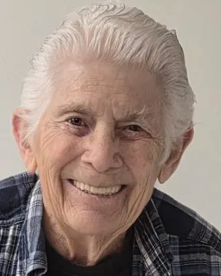
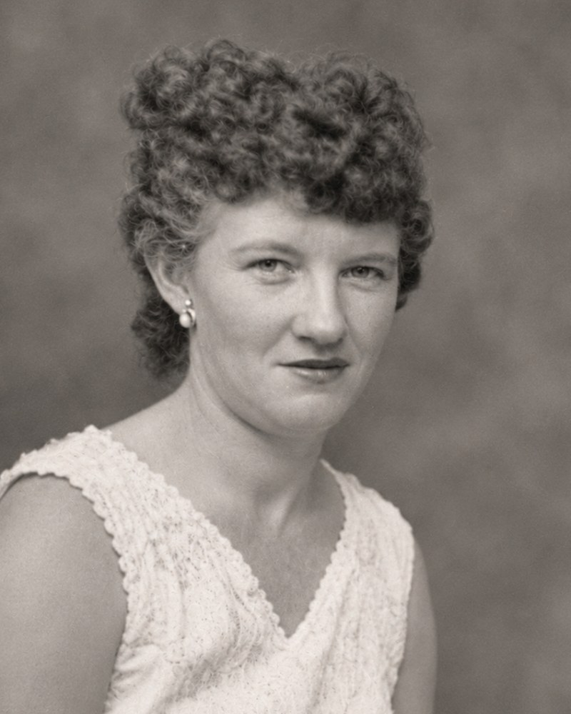
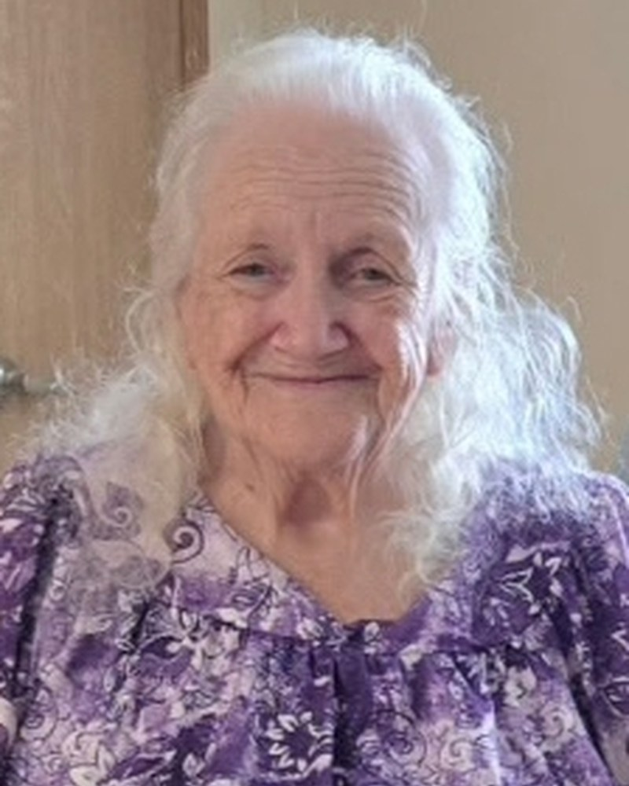
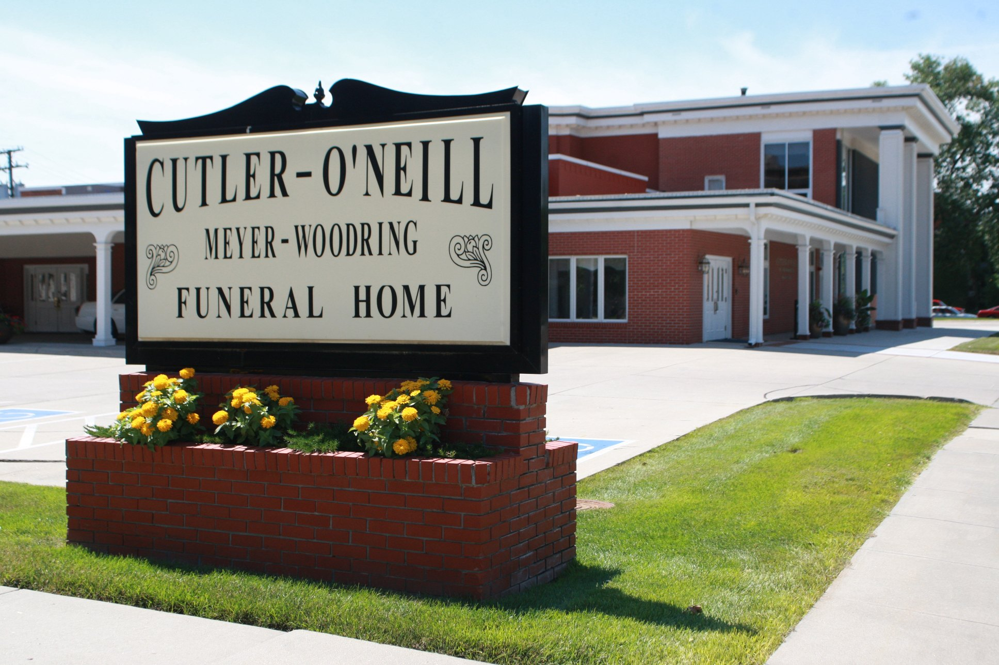

Council Bluffs, Iowa
When you need us most
At Cutler-O’Neill, we are dedicated to providing unwavering support and heartfelt care during life’s most challenging moments. Whether you’re planning ahead or need immediate assistance, we are here for you—day or night.
-
100+
Years of service
-
200+
Years combined experience
-
3
Generations
-
2
Locations
01 Obituaries
Recent Obituaries
Find your loved one to share a memory or express your condolences. Names and dates are from the funeral home’s public listings; each tribute opens the official obituary.
-
-
-

-

-

-
-
-
02 Immediate need
Call us any time
If you’re not sure what to do, call us. Our experienced team is here to guide you with compassion, ensuring every detail is handled with the utmost respect and professionalism. We are here for you—day or night.
03 Services
Services you can trust
Planning a funeral service can be a very difficult process. Gathering with friends and family gives everyone the opportunity to connect, share memories, and create a lasting network of comfort and support.
-
01
Funeral & burial
Visitation, also called a viewing, wake, or calling hours, allows family and friends to gather and say goodbye. Funeral or memorial services can take place at a funeral home, in a church, or even at your home—personalized to reflect the individuality of your loved one. Graveside, chapel, or committal services are held at the cemetery.
Service options -
02
Memorial & cremation
The biggest misconception about cremation is that there can’t be a funeral service or visitation. That is not the case, and we encourage you to consider holding a memorial service. Afterward, families may choose interment, graveside services, scattering, or placing cremated remains in multiple urns.
Service options -
03
Green burial
For those who want to be more environmentally friendly with their end-of-life decisions, we offer green burial options. This way, you can honor your loved one’s life while reducing their environmental impact.
Service options -
04
Honoring veterans
We’re proud to do our part in honoring our country’s veterans. Military funeral honors are free of charge and mandated by law for eligible veterans. We can also help you communicate with the U.S. Department of Veterans Affairs about certificates, markers, national cemetery burial, and related benefits.
Veterans honors -
05
Where to begin
Planning a funeral can be overwhelming, but you are not alone in this. We’re here to support you throughout this journey and make this process one of love, healing, and life celebration. If you’re not sure what to do, call us any time.
Get started -
06
Aftercare
Grieving doesn’t always end with the funeral. The following tools are available to assist you in your healing journey, and you can contact us to discuss other resources and find a personalized solution.
Grief resources
04 Plan ahead
Ways to plan ahead
As William Shakespeare so eloquently put it, “All things are ready, if our mind be so.” Making arrangements beforehand gives you time to consider all of your options and make sure that you’re covering all of the necessary details.
-
It’s easy
Fill out a form or meet with a member of our staff to put your plan in place. Anyone can create a plan, at any stage in their life, and you always can make changes if you wish.
-
You decide
Preplanning lets you create your own unique life celebration, and including your family can help them feel connected, knowing your arrangements reflect your desires.
-
Relieve your family’s burden
Preplanning gives them more time and energy to focus on healing and remembrance.
-
You can prepay
Prepayment generally means that you save money by being protected from inflation and price changes. We deposit all prepayments into a trust fund where it remains until needed.
-
If you move
We keep a record of your preplanned arrangements and any prepayments, and they’re easily transferable to any funeral home in the United States.
Checklist
A starting point
There’s no need to make all the decisions right away. For personalized assistance, contact one of our experts to schedule a one-on-one meeting.
- Gather personal information for your obituary
- Choose a charity to direct donations to, if desired
- Make note of any instructions for your services and final disposition
- Personal information, such as your father’s name and your mother’s maiden name
- Organizations, memberships, or special recognitions you have
- Military service information

05 Locations
Visit us in Council Bluffs
Willow Avenue
Cutler-O’Neill-Meyer-Woodring Funeral Home & Crematory
545 Willow Avenue
Council Bluffs, IA 51503
(712) 322-7779 · Fax: (712) 322-7729
Open in Maps7th Street
Maher Funeral Home
121 S 7th St
Council Bluffs, IA 51501
Luncheon facility
Serving our area families
We have been serving our area families for years. It is an honor to be a part of the rich history of this community, and we plan to be a part of it for many years to come.
Cutler-O’Neill Community Room
545 Willow Ave., Council Bluffs, Iowa 51503
Walnut Hill Reception Center
1350 E. Pierce St., Council Bluffs, Iowa
06 About
Three generations of service
Over 100 years of serving southwest Iowa families have been entrusted to our family — a fact we don’t take lightly.
Built in the mid-to-late 1800’s, our former buildings were monuments of heritage of history. In our current facility, we strive to preserve and enhance that legacy. Our service is a symbol of our devotion to create an environment of care and comfort.
Our licensed funeral directors have over 200 years of combined experience. They are not merely employees of a larger entity; they are the home’s owners who see to it personally that the service and attention you desire will be delivered.
07 Grief resources
Support after the service
The following are some tools available to assist you in your healing journey. Contact us to discuss other resources and find a personalized solution to support you on the road to recovery.
-
Visit GriefShare
GriefShare
A friendly, caring group of people who will walk alongside you through one of life’s most difficult experiences.
-
Visit the site
The Compassionate Friends
Friendship, understanding, and hope for families who have had a child die, at any age, from any cause.
-
Visit AARP
AARP
Articles, discussions, and helpful information on end-of-life care, the challenges faced by caregivers, and grief after a loss.
-
Learn more
365 Days of Healing
Grieving doesn’t always end with the funeral. Daily emails of comfort and hope are offered on the funeral home’s grief support page.
-
Sesame Street in Communities
Children & grief
Sesame Street in Communities explores children’s understanding of death and offers ways to cope and move forward together.
-
Read the FAQs
FAQs & local information
Answers about arrangements, plus local florists, hotels, newspapers, and veterans and Social Security resources.
08 Contact
Get in touch
Helping your family through tough times is our calling. We’re ready to serve in your time of need, so please contact us with any questions, comments, or inquiries.
Willow Avenue
Cutler-O’Neill-Meyer-Woodring Funeral Home & Crematory
545 Willow Avenue, Council Bluffs, IA 51503
(712) 322-7779 · Fax (712) 322-7729
7th Street
Maher Funeral Home
121 S 7th St, Council Bluffs, IA 51501